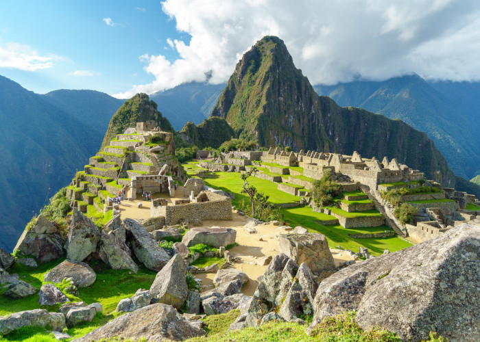
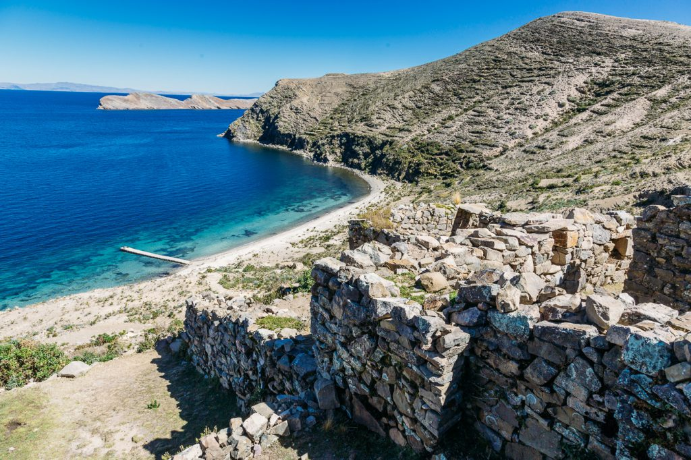
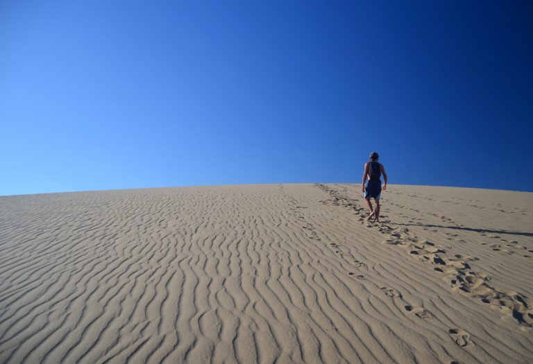

1.Urubamba, Peru
Podróż po Ameryce Południowej bez wycieczki do Świętej Doliny Inków w Andach peruwiańskich? Czyste szaleństwo! Razem z Machu Picchu to niesamowita podróż przez mistyczne Peru. Dolina była istotna dla Inków ze względu na jej geograficzne i klimatyczne cechy. Było to również jedno z głównych miejsc, gdzie Inkowie wydobywali z ziemi różne dobra naturalne. Znajdują się w niej dowody mienionej świetności, bogactwa kultury i rdzenne wioski poprzecinane rzekami, które spływają małymi dolinami i tworzą niesamowity krajobraz. Główną rzeką tego regionu jest Urubamba, od której swoją nazwę wzięło największe miasto w dolinie. Urubamba to przyjazne miejsce, w którym znajduje się mnóstwo hoteli i restauracji. Jest popularną bazą wypadową dla poszukiwaczy przygód, którzy chcą wyruszyć na podbój doliny a w niej Pisac, Ollantaytambo i Chinchero.

2. Isla del Sol (Wyspa Słońca), Boliwia
Prawie wszyscy, którzy marzą o Ameryce Południowej, planują trasę Boliwia-Peru-Chile. Jezioro Titicaca to jedna z największych gwiazd tego rejonu, na którym znajduje się aż 41 wysp. Niesamowitych miejsc jest mnóstwo, więc pytanie pozostaje tylko jedno – które wysepki zobaczyć z bliska? Isla del Sol to po prostu mus. Łatwo się na nią dostać z miasta Copacabana, jest największa (14,3 km kwadratowych) i zalicza się do najpiękniejszych wysp jeziora Titicaca. Inkowie uważają ją za świętą, ponieważ znajdowało się tutaj miejsce kultu Dziewic Słońca, kapłanek Boga Słońca. Dziś wyspa jest zamieszkana przez rdzenne plemiona Indian Quechua i Aymara, którzy zajmują się głównie rękodziełem i pasterstwem. Na wyspie znajduje się mnóstwo interesujących miejsc, jak na przykład Muzeum Challapampa, w którym znajdziesz przedmioty wydobyte podczas lokalnych wykopalisk. Pejzaż jest niesamowity – szlaki przecinające wyspę z północy na południe, lazurowe wody, zielone góry i oczywiście niezwykłe Andy i ich ośnieżone szczyty.

3. Cabo Polonio, Urugwaj
A co, gdyby twoja kolejna podróż zakończyła się w malutkiej wiosce, gdzie nie ma prądu, Internetu, ani nawet brukowanych ulic? Trudno to sobie wyobrazić? W miejscu tak czarującym jak Cabo Polonio, w Urugwaju, na pewno nie będziesz tęsknił nawet za cywilizacją. Półwysep jest położony 260 km od stolicy kraju, Montevideo, i jest powszechnie uważany przez przyjezdnych za magiczne miejsce. Możesz spodziewać się prawie bezludnych plaż, ogromnych, białych wydm piaskowych otaczających miasto, lwów morskich, które prawie zawsze kręcą się w pobliżu wysp przybrzeżnych, bajkowych zachodów słońca i rozświetlonego gwiazdami nieba w nocy. Dostęp do wioski jest dość ograniczony – najbliższa droga znajduje się 7 km dalej, więc dojedziesz albo konno, albo pojazdem z napędem na 4 koła. Niewielka populacja to głównie rybacy, rzemieślnicy i pracownicy lokalnej latarni morskiej. Możesz też odetchnąć z ulgą – wiele z budynków i placówek ma swoje własne generatory, więc nie musisz obawiać się nieustannej ciemności.
